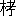

| 古事記 05 語句索引 | |
| 武田 祐吉 | |
| (2013) | |
古事記
語句索引
武田祐吉
語句索引凡例
一、本書の書き下し文について、そのうちの重要な語句を摘出して索引を作つた。神武天皇の如きは、本文にはないが、便宜上これを出してその記事の所在を示すこととした。主として句頭に出ない語句をこの索引に收め、他は歌謠各句索引に讓つたものが多い。
一、同一の事項と認められるものは、用字が多少相違していても、一つに整理して出した。何々の命、何々の神、何々の王の如きも、たいてい一つによつて出したが、何々の天皇とあるが如きは別に出した。また別の事項でも同名の場合は、合併して出すものがある。たとえば麻呂古の王を一つにまとめた如きである。
一、所在を示す數字は、本書のページ數である。同一のページに二囘以上出ている場合は、一つをあげるに止めた。
一、「い」と「ゐ」、「え」と「ゑ」、「お」と「を」は、それぞれ合併した。漢字の字音によるものは、表音かなづかいによつた。孝安天皇をコの部に收めた類である。
あ
ああしやこしや
藍見河
青垣
青雲の白肩の津
青摺
菘菜（あをな）
青和幣
あをによし
青沼馬沼押比賣
青葉の山
青柴垣
青海の郎女
赤猪
赤猪子
赤色の楯矛
赤かがち
縣主
縣主波延
赤玉
赤幡
赤比賣の郎女
阿加流比賣
飽咋の大人の神
蜻蛉
秋津島
蜻蛉島
阿岐豆野
あぎとひ
阿藝那の臣
阿岐の國
秋毘賣の神
吾君
秋山の下氷壯夫
阿久斗比賣
阿具沼
趺み（あぐみ）
呉床
呉床座
高田（あげた）
曙立の王
帷幕（あげばり）
朝署（あさけ）
淺茅原
朝戸
朝床
朝日の
朝日の直刺す國
阿耶美都比賣の命
朝目吉く
葦
葦井の稻置
足鏡別の王
足柄の坂下
葦田の宿禰
葦那陀迦の神
足名椎
跛（あしなへ）
葦原色許男の命
葦原色許男の大神
葦原の中つ國
あしひきの
足一騰の宮
葦船
吾兄を
阿蘇の君
樂（あそび）
遊び
飛鳥河
飛鳥の君
飛鳥の清原の大宮に太八洲しらしめしし天皇
阿須波の神
あたねつ木
阿陀の鵜養
阿多の小椅
阿太の別
あたら
阿知吉師
阿遲志貴高日子根の神
阿遲鉏高日子根の神
阿知の直
阿直の史
檳榔（あぢまさ）の島
檳榔の長穗の宮
小豆
小豆島
阿豆の王
梓弓
梓弓
阿豆麻
東
東の淡の水門
東の國の造
吾嬬はや
阿曇（あづみ）の連
足取の王
あな玉
穴戸の神
穴門の豐浦の宮
あなにやし、えをとこを
あなにやし、え娘子を
阿那の臣
穴穗の御子
穴穗の命
穴穗箭
粟
淡島
粟田の臣
畔（あ）離ち
淡路
淡道島
淡道の穗の狹別の島
阿貝知の三腹の郎女
淡道の屯家
粟の國
粟生
あはれ
相津
あひねの濱
阿比良比賣
逢坂
淡海
淡海の久多綿の蚊屋野
淡海の海
淡海の置目
淡海の國
淡海の佐佐紀の山の君
淡海の柴野入杵
脂
阿部の郎女
阿部の臣
阿部の波延比賣
天翔り
甜白檮（あまかし）の前
天語歌
天降し
天知る迦流美豆比賣
天だむ
天つ神
天つ神の御子
天津國玉の神
天つ久米の命
天つ日高
天津日子根の命
天つ日高日子波限建鵜葦草葺合へずの命
天つ日高日子番の邇邇藝の命
天つ日高日子穗穗出見の命
天つ日繼
天津麻羅
天つ御饗
天つ御虚空豐秋津根別
天照らす大神
天飛ぶ
天の原
天馳使
あまひのみ
海部
虻（あむ）
天押帶日子の命
天國押波流岐廣庭の天皇
天國押波流岐廣庭の命
天地
天地の初發
天の石位
天の石門別の神
天の石屋
天の石屋戸
天の石靫
天の浮橋
天の宇受賣
天の忍男
天の忍許呂別
天の忍日の命
天の忍穗耳の命
天の尾羽張の神
天の羅摩（かがみ）の船
天の迦久の神
天の加久矢
天の香山
天の堅石
天の金山
天の久比奢母智の神
天の闇戸の神
天の兒屋の命
天の逆手
天の狹霧の神
天の佐具賣
天の狹土の神
天の狹手依比賣
天の常立の神
天の手力男の神
天の都度閇知泥の神
天の鳥船
天の新巣
天の沼琴
天の沼矛
天の波士弓
天の波波迦
天の波波矢
天の日影
天の日腹大科度美の神
天の日矛
天の吹男の神
天の兩屋
天の冬衣の神
天の火明の命
天の菩卑の命
天の麻迦古弓
天の眞鹿兒矢
天の眞拆
天の眞名井
天の眞魚咋
天の御舍
天の御影の神
天の甕主の神
天の水分の神
天の御巣
天の衣織女
天の御中主の神
天の御柱
天の斑駒
天の安の河
天の安の河原
天の八十平瓮
天の八衢
天の八重多那雲
天一根
天比登都柱
天若日子
天降（あもり）
文垣
阿夜訶志古泥の神
あやに
漢の直
漢の王
年魚
足結
荒河戸辨
殯（あらき）の宮
あら玉の
荒ぶる蝦夷
荒ぶる
惡ぶる人
惡ぶる態
荒御魂
あり岡
ありなり
あるか
阿禮比賣の命
あわ咲く御魂
沫那藝の神
沫那美の神
沫雪の
安康天皇
い、ゐ
井
伊迦賀色許男の命
伊迦賀色許賣の命
五十日帶日子の王
雷神
伊賀の須知の稻置
猪甘
伊賀比賣の命
怒り猪
い杵築
息衝き
伊岐の島
生江の臣
將軍
生大刀
活玉前玉比賣の神
活玉依毘賣
活津日子根の命
的の臣
齋杙
堰杙
いくみ
いくみ竹
伊玖米入日子伊沙知の命
伊玖米の天皇
生弓矢
海石（いくり）
池の邊の宮
生剝
伊許婆夜和氣の王
伊耶河の坂
伊耶佐の小濱
伊奢沙和氣の大神の命
いさち
いさちる
伊耶那岐の神
伊耶那美の命
伊奢の麻和迦の王
伊耶の眞若の命
伊佐比の宿禰
伊耶本和氣の天皇
伊耶本和氣の王
居寤の［＃「居寤の」は底本では「居寢の」］
清泉
いさよふ
石祝作り（いしきつくり）
いしけ
伊斯許理度賣の命
いしたふや
石椎い
石比賣の命
伊自牟の國の造
いすくはし
伊須氣余理比賣
いすすぎ
五十鈴の宮
伊勢の飯高の君
伊勢の海
伊勢の大鹿の首
伊勢の大神の宮
伊勢の大御神
伊勢の神宮
伊勢の國
伊勢の佐那の造
伊勢の船木の直
伊勢部
伊勢の品遲部
石の上の穴穗の宮
石の上の神宮
石の上の廣高の宮
石の上の宮
痛手
板戸
痛矢串
市
市寸島比賣の命
柃（いちさかき）
市師の池
壹師の君
伊知遲島
市の邊の忍齒の王
市の邊の忍齒別の王
市の邊の王
赤檮（いちひ）
櫟井（いちひゐ）
壹比韋の臣
嚴白檮（いつかし）
何處
伊豆志袁登賣
伊豆志河
伊豆志の八前の大神
五瀬の命
五處の屯倉
五伴の緒
稜威の男建
伊都の尾羽張の神
稜威の高鞆
稜威の道別き
伊豆能賣
伊豆美
出雲
出雲の石※［＃「土へん＋向」、U+57A7、398-3-26］の曾の宮［＃「出雲の石垧の曾の宮」は本文の書き下し文では「出雲の石※［＃「石＋炯のつくり」、U+2544E、103-本文-11］の曾の宮」］
出雲の郎女
出雲の大神
出雲の國
出雲の國の造
出雲建
糸井比賣
懿徳天皇
いとこ
伊登志部
伊登志和氣の王
伊斗の村
伊杼美
稻幹
稻置
稻城
稻木
稻木の別
伊那佐の山の
いな醜め醜めき穢き國
稻瀬毘古の王
稻種
稻田の宮主須賀の八耳の神
韋那の君
稻羽
稻羽の忍海部
稻羽の國
稻羽の素菟
伊那毘の大郎女
伊那毘の若郎女
稻目の大臣
稻依別の王
いなる
印色の入日子の命
犬
犬上の君
犬婚
いのごふ
伊怒比賣
石押分の子
石木の王
石坰の王
石拆の神
石代の別
石巣比賣
石立たす
石衝毘賣の命
石衝別の王
石土毘古の神
石筒の男の神
石長比賣
石の日賣の命
忌人
忌瓮
忌矢
石寸の池
伊波禮の玉穗の宮
伊波禮の甕栗の宮
伊波禮の若櫻の宮
伊波禮部
井氷鹿
飯肩巣見の命
飯の子
飯豐の郎女
飯豐の王
飯野の眞黒比賣
飯日比賣の命
飯粒
飯依比古
氣吹の狹霧
伊服岐の山の神
伊賦夜坂
言へせ
家群
五百木の入日子の命
五百木の入日賣の命
五百鉤
五百箇
五百入
五百原の君
五百引の石
爾（いまし）
伊美賀古の王
忌服屋
忌部の首
い向ふ神
夢の歌
妹活杙の神
妹大斗乃辨の神
妹須比智邇の神
禮物
伊豫の國
伊豫の國の造
伊豫の二名の島
伊豫の湯
伊豫の別
いらなけく
伊理泥の王
入鹿魚（いるか）
同母兄（いろせ）
兄（いろせ）の神
弟（いろと）
同母妹（いろも）
伊和島の王
允恭天皇
う
鵜
植草
宇迦の山
穿
宇迦の御魂
鵜河
鵜養
族
宇岐歌
兎寸河（うきがは）
浮きじまりそりたゝして
盞結ひ
覆槽
うけひ
誓ひて
誓ふ
宇沙
菟
菟神
宇沙都比古
宇沙都比賣
牛
蛆
牛婚
うしはける
後方
髻華
うずすまり
碓女
宇陀
歌垣
うたき
樂（うたげ）
歌凝比賣の命
うたたけだに
うたて
菟田の首
宇陀の酒部
宇陀の墨坂の神
宇陀の蘇邇
宇陀の水取
氏姓
打ち羽振り
宇遲野
内の朝臣
宇遲の王
宇遲の和紀郎子
宇遲の若郎女
宇治の渡
内はほらほら、外はすぶすぶ
現しおみ
うつしき青人草
宇都志國玉の神
内色許男の命
内色許賣の命
宇都志日金拆の命
内剝ぎ
宇豆比古
鶉鳥
項懸けり
うながせる
項傾（うなかぶ）し
菟上の王
海坂
海原
畝尾
畝火の白檮原の宮
畝火山
畝火山の眞名子谷
畝火山の美富登
婇（うねめ）
婇の臣
菟野の郎女
上つ國
上筒の男の命
上津綿津見の神
後妻（うはなり）
嫉妬み（うはなりねたみ）
宇比地邇の神
産屋
産殿
筌
上の宮の厩戸の豐聰耳の命
諾し
うべな
味白檮の言八十禍津日の前
馬甘牛甘
馬木の王
馬來田の國の造
味師内の宿禰
宇摩志阿斯訶備比古遲の神
宇摩志麻遲の命
馬婚
馬の御樴の連
馬※［＃「木＋宿」、U+6A0E、400-4-2］
茨田の郎女
茨田の下の連
茨田の堤
茨田の王
茨田の三宅
茨田の連
宇美
海佐知毘古
海つ道
海邊
生みませる
蛤貝比賣（うむがひひめ）
宇毛理の王
卜
うらげ
うら戀し
浦渚の鳥
末葉（うらば）
宇流鉤
うるはし
うれたく
うれづく
え ゑ
兄宇迦斯
ええ、しやこしや
咲酒（ゑぐし）
植栗の王
兄師木
吉野
吉野川
吉野の首
吉野の國主
吉野の宮
枝
飢ぬ
役の氣
江野の財臣
惠波の臣
蒲子（えびかづら）
愛比賣
兄比賣
蝦夷
お を
麻
命（を）
男淺津間の若子の宿禰の命
應神天皇
小碓の命
牡馬
小兄比賣
をえまし
岡田の宮
小河
小貝の王
淤迦美の神
岡本の宮
奧疎の神
奧つ鏡
奧津甲斐辨羅の神
奧津島比賣の命
奧つ鳥
奧津那藝佐毘古の神
奧津日子の神
奧津比賣の命
奧津余曾
奧津宮
息長帶比賣の命
息長田別の王
息長の君
息長の宿禰の王
息長日子の王
息長眞手の王
息長眞若中比賣
息長の水依比賣
淤岐の島
隱岐の三子の島
沖方
置目の老媼
小熊子の郎女
麻組の郎女
奧山津見の神
意祁都比賣
袁祁都比賣の命
袁祁の石巣別の命
意祁の天皇
意祁の命
袁祁の命
をこ
忍坂
忍坂の大中津比賣の命
忍坂の日子人の太子
刑部
袁耶本の王
押機（おし）
忍鹿比賣の命
忍熊の王
押黒の兄日子の王
押黒の弟日子の王
おしてるや
咋し遺り
押別の命
忍海の郎女
忍海部の造
忍齒の王
食國（をすくに）
襲（おすひ）
をせ
押そぶらひ
男建
小楯
小楯の連
小谷
墮國
をぢなみ
落別の王
小津
尾津の前
弟宇迦斯
弟苅羽田刀辨
弟國
男の弓端の調
弟師木
弟財の郎女
弟建
弟橘比賣の命
弟棚機
をとつ
弟比賣
袁杼比賣
弟比賣の命
弟日賣の命
弟日賣眞若比賣の命
孃子
淤縢山津見の神
袁那辨の王
袁那辨の郎女［＃「袁那辨の郎女」は底本では「衰那辨の郎女」］
淤能碁呂島
小野の郎女
小野の臣
男の水門
尾翼鱸（をはたすずき）
小濱
小羽江の王
小椅の江
小長谷の若雀の命
小長谷の造
小長谷部
尾張
小治田
小治田の大宮
小治田の臣
小治田の王
小治田の宮
尾張
尾張の國
尾張の國の造
尾張の丹波の臣
小張の王
尾張の國の三野の別
尾張の連
帶
大石（おひし）
首
凡川内（おふしかふち）の國の造
大魚よし
凡（おふし）の連
意富阿麻比賣
大猪
大雷
大猪子が原
大郎子
大郎女
大入杵の命
大碓の命
大浦
大江の伊耶本和氣の命
大枝の王
大江の王
大魚
大尾
大臣
大尾よし
大香山戸臣の神
大河原
大神
大神の宮
意富加牟豆美
嫡后
大后
皇后
意富藝多志比賣
大分の君
大吉備津日子の命
大吉備の建比賣
大吉備の諸進の命
大日下の王
大日下部
大國魂の神
大國主
大國主の神
大國の淵
大國御魂の神
大久米の命
大氣都比賣の神
大宜都比賣の［＃「大宜都比賣の」は底本では「大宣都比賣の」］
神
意富祁の天皇
意富祁の命
大事忍男の神
大坂
大坂戸
大坂の臣
大坂の神
大坂の山口
大雀の皇帝
大雀の命
大島
意富多多泥古の命
太田の君
大多摩流別
大多牟坂の王
意富多牟和氣
大帶日子淤斯呂和氣の天皇
大帶日子淤斯呂和氣の命
大帶日子の天皇
淤煩鉤
大土の神
大筒木垂根の王
大年の神
意富斗能地の神
袁本杼の命
大戸比賣の神
大戸日別の神
大戸或子の神
大戸或女の神
大伴の金村
大伴の王
大伴の連
大鞆和氣の命
大名方の王
大中津日子の命
大中津比賣の命
意富那毘
大直毘の神
大穴牟遲の神
大甞
大贄［＃「大贄」は底本では「大贅」］
大幣
大根
大根の王
太の朝臣安萬侶
大野の岡
意富の臣
大野手比賣
大羽江の王
大量
大長谷の天皇
大長谷の王
大長谷の命
大長谷の若建の命
大長谷の若建の天皇
大原の郎女
大祓
大毘古の命
大氷雨
意富本杼の王
大禍津日の神
大俣の王
大前
大前小前の宿禰
大鋺
意富美
大御呉床
大御羮
大御饗
大御神
大御酒
大御食
大御飯
大御心
大御琴
大御盞
大御寢
大御葬
大御水
大宮人
意富美和の大神
大目
大物主の大神
大物主の神
大宅の王
太八洲
大八島國
大屋毘古の神
大山咋の［＃「大山咋の」は底本では「大山昨の」］
神
大山津見の神
意富夜麻登玖邇阿禮比賣の命
大倭帶日子國押人の［＃「大倭帶日子國押人の」は底本では「大倭帶日子國押入の」］
命
大倭豐秋津島
大倭根子日子國玖琉の命
大倭根子日子賦斗邇の命
大倭の國
大倭日子鉏友の命
大山守の命
大湯坐
大綿津見の神
小俣の王
淤美豆奴の神
女（をみな）
老女子の郎女
女の手末の調
臣の孃子
袁牟漏が嶽［＃「袁牟漏が嶽」は底本では「袁牟漏が獄」］
小目の山の君
面勝つ
於母陀琉の神
母の乳汁
思金の神
思ひ妻
小屋
祖神
上通下通婚（おやこだはけ）
おれ
蛇（をろち）
か
開化天皇
鏡作の連
鉤穴
蠣貝
柿本の臣
かきまみ
垣下
かぎろひの
迦具土の神
香ぐはし
迦具夜比賣の命
香山
香山戸臣の神
香用比賣
香余理比賣の命
隱ら
訶具漏比賣
迦具漏比賣の命
鷄（かけ）
縵四縵矛四矛
縵八縵矛八矛
香坂の王
笠紗の御前
笠縫
笠縫の王
笠の臣
風木津別の忍男の神
白檮（かし）の尾の上
柏
膳夫（かしはで）
膳の大伴部
膳の臣
春日
春日の伊耶河の宮
春日の小田の郎女
春日の袁杼比賣
春日の大郎女
春日の臣
春日の建國勝戸賣
春日の千千速眞若比賣
春日の中の若子
春日の日爪の臣
春日の王
春日の山田の郎女
春日の山の君
春日部の君
風切る比禮
風の神
風振る比禮
片岡の石坏の岡
片岡の馬坂
堅石
堅石の王
片鹽の浮穴の宮
迦多遲の王
がたに
語りごと
勝さび
堅魚
かつがつ
勝門比賣
葛野
葛野の松の尾
葛野の別
香木（かつら）
鬘
葛城
葛城の五村
葛城の忍海の高木の角刺の宮
葛城の曾都毘古
葛城の高千那毘賣
葛城の高額比賣の命
葛城の垂根の王
葛城の長江の曾都毘古
葛城の野の伊呂賣
葛城の王
葛城の室の秋津島
葛城の山
葛城の掖上の宮
かな
金鉏
金鉏の岡
かなで
金山毘古の神
金山毘賣の神
蟹
鍛人
がね
河上部
河鴈
河瀬の舍人
皮疊八重
骨（かばね）
姓（かばね）
河の神
河の瀬の神
河部
川邊の臣
河俣の稻依毘賣
厠
川原田の郎女
峽
甲斐
甲斐の郎女
甲斐の國の造
殼（かひこ）
貝鮹の王
河内
河内の青玉
河内の惠賀の長江
河内の惠賀の長枝
川内の惠賀の裳伏の岡
河内の國の志幾
川内の科長
河内の多治比の高鸇
河内の古市の高屋の村
河内の美努の村
河内の若子比賣
頭（かぶ）著く
訶夫羅前
鎌倉の別
竈の神
蒲の黄
蒲生の稻寸
竈山
雷（かみ）
神風の
上つ菟上の國の造
上毛野
髮長比賣
神の氣
神の御門
神の朝廷
神の御子
上の王
神の御手
神の社
神世七代
臭韮
神阿多都比賣
神活須毘の神
神うれづく
神大市比賣
神大根の王
神懸り
神語
神櫛の王
神前の郎女
神集ひ
神牀
神度の劒
神直毘の神
神習は
神主
神沼河耳の命
神宮
神御衣
神産巣日の神
神産巣日の命
神産巣日御祖の神
神産巣日御祖の命
神八井耳の命
神屋楯比賣の命
神倭伊波禮毘古の命
神倭伊波禮毘古の天皇
神倭の天皇
神逐ひ
神歸せ
龜の甲
鴨
かも
がも
迦毛の大御神
鴨の君
蚊屋野
鹿屋野比賣の神
通はせ
韓鍛
韓國
韓の神
枯野
韓人
訶良比賣
韓比賣
韓帒
枯松
雁
苅杙
刈薦
獵庭
苅幡戸辨
苅羽田刀辨
輕孃子
輕島の明の宮
輕の池
輕の孃子
輕の大郎女
輕の酒折の池
輕の境岡の宮
輕の堺原の宮
輕の太子
輕部
輕部の臣
輕箭
かわら
訶和羅の前
き
き
聞かし
雉子
雉子名鳴女
雉子の頓使
聞こし
 貝比賣［＃「
貝比賣」は底本では「※［＃「討／貝」、406-2-9］貝比賣」］
貝比賣［＃「
貝比賣」は底本では「※［＃「討／貝」、406-2-9］貝比賣」］
きさげ
岐佐理持
岸田の臣
岐須美美の命
著具ふ
岐多志比賣の命
きたなき心
穢き繁き國
除て
木戸
木梨の輕の太子
木梨の輕の王
絁疊
絁垣
木の荒田の郎女
木の臣
木の神
木の國
紀の國
木の國の造
木の角の宿禰
木の俣
木の俣の神
吉備
岐比佐都美
吉備の海部の直
吉備の石旡の別
吉備の兄日子の王
吉備の臣
吉備の臣建日子
吉備の上道の臣
吉備の國
吉備の下道の臣
吉備の品遲の君
吉備人
來經れ
來經
肝向ふ
清日子
清原の大宮
く
久延毘古
玖訶瓮（くかべ）
玖賀耳の御笠
久久紀若室葛根の神
久久年の神
久久能智の神
玖沙訶
日下
日下江
日下の高津の池
日下の蓼津
日下部
日下部の連
草薙の大刀
草薙の劒
舊辭
櫛石窻の神
櫛角別の王
櫛名田比賣
靈じふる
櫛御方
櫛八玉の神
國主（くず）
國主歌
久須婆
玖須婆の河
久須婆の渡
久須毘の郎女
藥
屎（くそ）
屎褌（くそばかま）
百濟
百濟の池
百濟の國
口子の臣
口比賣
鷹（くぢら）
沓
國忍富の神
國片比賣の命
國つ神
地つ祇（くにつかみ）
國作り
國の久比奢母智の神
國の闇戸の神
國の狹霧の神
國の狹土の神
國の常立の神
國の秀（ほ）
國の水分の神
國の造
國讓り
歴木（くぬぎ）
久奴の王
細比賣の命
麗し女
桑田の王
鵠（くび）
杙俣長日子の王
頭椎い
下田
熊白檮
熊野久須毘の命
熊曾建
熊曾の國
熊野の村
隱處（くみど）
久米歌
久米の直
久米の子
久米の摩伊刀比賣
久米の王
鞍
闇淤加美の神
水母（くらげ）
藏の官
倉の若江の王
倉椅の岡
倉椅の柴垣の宮
倉椅山
倉人女
闇御津羽の神
闇山津見の神
栗栖原
呉服（くれはとり）
呉原
呉人
黒雷
くろざや
黒樔の橋
黒田の廬戸の宮
黒日子の王
黒比賣
黒御鬘
け
景行天皇
繼體天皇
系譜
汚垢（けがれ）
著せ
氣多の前
毛の麤物毛の柔物
けば
氣比の大神
けり
ける
けれ
軒后
顯宗天皇
元明天皇
こ
蠶（こ）
海鼠（こ）
此
孝元天皇
孝昭天皇
小石比賣の命
こをば
こをろこをろに
こきし
こきだ
五行
木钁
九夜
高志
高志の池の君
高志の國
高志の前
高志の利波の臣
高志の道
腰佩
腰裳
こしも
兒島の郡
小鈴
こせね
許勢の小柄の宿禰
許勢の臣
昨夜
こそ
こそよ
詐刀
琴
言離の神
事代主の神
事戸
事無酒（ことなぐし）
ことば
言向け
言よさし
諺（ことわざ）
前妻（こなみ）
國主
子の一木
木の花知流比賣
木の花の佐久夜毘賣
木幡
古波陀孃子
金波鎭漢紀武
子産
海蓴（こも）の柄［＃「海蓴（こも）の柄」は本文の書き下し文では「海蒪」、U+84AA、59-本文-4
］（こも）の柄」］
こもりくの
隱津
死刑
衣矜
許呂母の別
ころろぎ
さ
佐韋
狹井
狹井河
西素
槁
さ小尾
槁根津日子
酒折の宮
酒樂の歌
賢し女
坂田の大俣の王
坂手の池
坂の神
坂騰の王
坂の御尾の神
逆剝ぎ
酒人の君
境の黒日子の王
坂合部の連
酒船
酒部の阿比古
酒みづく
酒見の郎女
相模の小野
相武の國
坂本の臣
相樂
懸木
盛人
鷺
三枝
三枝の別
三枝部の穴太部の王
三枝部の造
前玉比賣
鷺の巣の池
沙紀の多他那美
狹城の楯列の陵
狹木の寺間の陵
拆雷
拆く釧
佐久夜毘賣
櫻井の臣
櫻井の田部の連
櫻井の玄の王
酒
佐氣都島
ささ
鷦鷯（さざき）
雀（さざき）
雀部
雀部の臣
雀部の造
佐佐宜の［＃「佐佐宜の」は底本では「佐佐宣の」］
郎女
佐佐宜の［＃「佐佐宜の」は底本では「佐佐宣の」］
王
沙沙那美
佐佐那美道
佐佐の君
小竹葉
刺國大の神
刺國若比賣
烏草樹（さしぶ）
佐土布都の神［＃「佐土布都の神」は本文の書き下し文では「佐士布都の神」］
假庪
さだめる
幸易へ
佐渡の島
佐那葛
漁田（さなきだ）の別［＃「漁田（さなきだ）の別」は本文の書き下し文では「漁田（すなきだ）の別」］
沙庭
讃岐垂根の王
讃岐の綾の君
讃岐の國
さねさし
沙禰の王
さ野つ鳥
佐波遲比賣の命
さ蠅なす
月經
佐比持
塞へます黄泉戸の大神
沙本
沙本の穴本部の別
沙本の大闇見戸賣
沙本毘古の王
沙本毘賣の命
さやぎ
さやぐ
さやげる
さやさや
狹山の池
障る
さ婚ひ
狹依毘賣の命
猿田毘古の神
猿女の君
さわさわに
佐和良の臣
し
し
じ
鴫
師木島の大宮
師木津日子玉手見の命
師木津日子の命
師木の縣主［＃「縣主」は底本では「懸主」］
志幾の大縣主
師木の玉垣の宮
師木の水垣の宮
志藝山津見の神
敷山主の神
鴫羂
しけし
猪
志自牟
しぞ
しぞも
下堅く
襪（したぐつ）
したたにも
細螺（しただみ）
下照比賣
下光比賣の命
下娉
下泣き
下樋
志都歌
靜歌の歌ひ返し［＃「靜歌の歌ひ返し」は本文の書き下し文では「志都歌の歌ひ返し」］
靜貝の王
科長の大陵
科長の中の陵
しなだゆふ
志那都比古の神
科野の國
科野の國の造
科野の坂の神
小竹
偲はめ
小竹原
柴垣
柴野比賣
底土（しはに）
椎
鮪
志比陀の君
志毘の臣
志夫美の宿禰の王
鹽こをろこをろに
潮瀬
鹽椎の神
鹽乾る珠
鹽盈つ珠
島田の臣
島田の君
島垂根
島つ鳥
島の速贄
寒泉
志米須
下つ菟上の國の造
下毛野の君
周王
照古王
聖徳太子
舒明天皇
白髮部
白髮の大倭根子の命
白髮の命
新羅
新羅の國
新羅人
白坂の活目子の郎女
白玉
白鳥の御陵
白日の神
白日別
虱
尻
尻久米繩
志理都紀斗賣
後つ戸
後つ殿戸
後手
白猪
銀の王
白き鹿

白和幣
白日子の王
神功皇后
神武天皇
す
ず
推古天皇
綏靖天皇
垂仁天皇
陶津耳の命
末の大主の神
須賀
管竈由良度美
清し女
須賀志呂古の郎女
すがすがし
菅疊
酢鹿の諸男
菅原
すから
菅原の伏見の岡
菅原の御立野
すくすくと
少名日子建猪心の命
少名毘古那の神
少名御神
菅原（すげはら）
須佐の男の命
崇神天皇
すすき
荻原（すすきはら）
須須許理
須須鉤
須勢理毘賣
ずは
簀椅
洲羽の海
周芳の國の造
墨色の楯矛
墨江の大神
墨江の中つ王
墨の江の三前の大神
須賣伊呂大中つ日子の王
須賣伊呂杼
せ
せ
清寧天皇
成務天皇
せなわ
せば
勢夜陀多良比賣
先紀
千字文
先代の舊辭
そ
ぞ
宗賀の稻目の宿禰
蘇我の臣
宗賀の倉の王
底つ石根
底筒の男の命
底津綿津見の神
底とく御魂
曾都毘古
衣通の郎女
衣通の王
翠鳥（そにどり）
苑人
曾婆加里
曾富理の神
虚空つ日高
虚空津比賣の命
そらみつ
た
田井の中比賣
多賀
高岡の宮
高城
高樹
高木の郎女
高木の入日賣の命
高木の大神
高木の神
高材比賣
高木比賣の命
高倉下
高佐士野
高島の宮
高しり
高巣鹿の別
高千の巓
高千穗の宮
高千穗の山
竹野比賣
竹葉
高光る
高比賣の命
多訶辨の郎女
高天の原
手上
高御産巣日の神
高宮
高向の臣
笋
高胸坂
高目の郎女
高安山
財の郎女
財の王
寶の王
たかれ
當藝
多藝志の小濱
多藝志比古の命
當藝志美美の命
たぎたぎし
多岐都比賣の命
多紀の臣
當藝の野
當岐麻道
當麻の倉首比呂
當麻の勾の君
當麻の王
當麻の咩斐［＃「當麻の咩斐」は本文の書き下し文では「當摩の咩斐」］
多紀理毘賣の命
手草
卓素
綱の
繩
たぐり
竹
建伊那陀の宿禰
建忍山垂根
建小廣國押楯の命
建貝兒の王
建内の宿禰
竹田の王
高市
高市の縣主
建豐波豆羅和氣の王
建沼河耳の命
建沼河別の命
建波邇安の王
建波邇夜須毘古の命
建速須佐の男の命
建日方別
建日向日豐久士比泥別
建比良鳥の命
建日別
建布都の神
建振熊の命
建御雷の男の神
建御雷の神
建御名方の神
建依別
多祁里の宮
建
建部の君
手腓（たこむら）
たしだし
たしには
たしみ
たしみ竹
手白髮の郎女
手次
直越
たたなづく
楯並めて
正身
疊
疊薦
腕（ただむき）
漂へる國
祟り［＃「祟り」は底本では「崇り」］
大刀が緒
易刀
手力男の神
立枛稜（たちそば）［＃「立枛稜（たちそば）」は本文の書き下し文では「立柧棱（たちそば）」］
橘の大郎女
橘の豐日の命
橘の中つ比賣の命
橘の本の若子の王
立氷
多遲比野
多治比の君
多治比の柴垣の宮
蝮（たぢひ）の水齒別の命
蝮部
多遲摩の國
多遲摩の國の造
多遲麻の竹の別
多遲摩の俣尾
多遲摩比多訶
多遲摩比那良岐
多遲摩斐泥
多遲摩毛理
多遲摩母呂須玖
鵠（たづ）
鶴（たづ）
楯津
獻らせ
田中の臣
手末（たなすゑ）
手俣（たなまた）
多邇具久
丹波の阿治佐波毘賣
旦波の大縣主
丹波の河上の摩須の郎女
旦波の國
丹波の竹野の別
旦波の比古多多須美智能宇斯の王
赤海鯽（たひ）
給びし
田人
多比理岐志麻美の神
田部
布の衣褌
玉垣
玉縵
手纒［＃「手纒」は本文の書き下し文では「手纏」］
たまきはる
玉釧
玉倉部の清泉
玉島の里
玉つ寶
玉手
玉手の岡
玉手の臣
玉の郎女
玉の緒
玉の祖の命
玉の祖の連
玉の緒ももゆらに
玉盌
玉依毘賣
田宮の中比賣
田村の王
味物（ためつもの）
多米の王
多羅斯
帶中津日子の天皇
帶中津日子の命
帶日子國押人の命
多良の王
椽（たるき）
手弱腕（たわやがひな）
手弱女
ち
父
血浦
知訶
近つ飛鳥
近つ飛鳥の宮
近つ淡海
近つ淡海の蚊野の別
近つ淡海の國
近つ淡海の國の造
近つ淡海の志賀の高穴穗の宮
近つ淡海の御上の祝
近つ淡海の安の直
近つ淡海の安の國の造
道反の大神
力士
千座の置戸
道敷の大神
知多の臣
千鉤
千千都久和比賣の命
千千速比賣の命
千鳥
血沼の池
血沼の海
血沼の別
智奴の王
千入
千葉
ちはや人
ちはやぶる
血原
千引の石
小子部の連
千尋繩
道俣の神
道守の臣
仲哀天皇
つ
杖衝坂
高處（つかさ）
月
槻
衝き立つ船戸の神
衝田の岡
つぎねふ
つぎねふや
机代の物
筑紫
筑紫の訶志比の宮
竺紫の君石井
筑紫の國
筑紫の島
竺紫の日向の高千穗
竺紫の日向の橘の小門の阿波岐原
筑紫の三家の連
筑紫の米多の君
筑波
槻弓
月讀の命
都祁の直
津島
津島の縣の直
土雲
土雷
土の御祖の神
筒木
筒木の宮
鼓
堤の池
黒葛（つづら）
角鹿
角鹿の濟の直
角杙の神
都奴の臣
都怒の郎女
都怒山の臣
つぶ立つ御魂
都牟羽の大刀
都夫良意富美
都夫良意美
都夫良の郎女
嬬
妻隱み
妻問ひの物
頰那藝の神
頰那美の神
連甕の多氣佐波夜遲奴美の神
つららく
鉤
劔の池
劔の池の中の岡
劔刃
つるぎの太刀
て
帝皇の日繼
帝紀
手島の連
手名椎
手間の山本
天乙
天地の開闢
天武天皇
と
とゐ
とををとををに
十日
十市の縣主
十市の入日賣の命
登袁の別
斗賀野
利鎌
著（と）き
時じくの香の木の實
時量師の神
常根津日子伊呂泥の命
詛言（とこひごと）
詛戸
常世
常世の國
常世の長鳴鳥
常夜往く
地得ぬ玉作
薢葛（ところづら）
土佐の國
富足る
十拳
十拳の劒
外つ宮
鳥取の河上の宮
鳥取の神
鳥取部
戸無し八尋殿
舍人
殿戸
殿の縢戸（くみど）
とふ
登富志の郎女
遠津年魚目目微比賣
遠つ飛鳥
遠つ飛鳥の宮
遠江の國の造
遠津待根の神
遠津山岬多良斯の神
登美の那賀須泥毘古
登美毘古
登美夜毘賣
利目
鞆
徒（とも）
とも
登由宇氣の神
戸山津見の神
豐葦原の千秋の長五百秋の水穗の國
豐葦原の水穗の國
豐石窻の神
豐木入日子の命
豐宇氣毘賣の神
豐國
豐國の國前の臣
豐國別の王
豐雲野の神
豐鉏入日賣の命
豐戸別の王
豐玉毘賣の命
豐の樂（あかり）
豐の國
豐日別
豐布都の神
豐御酒
豐御食炊屋比賣の命
響む
握り
鳥髮
鳥甘（とりかひ）
鷄婚（とりたはけ）
鳥鳴海の神
鳥の石楠船の神
取賣の王
鳥山
な
な
波折
長坂の君
長狹の國の造
媒
長田の大郎女
中筒の男
中つ土（に）
中つ日子の王
中つ日賣の命
中津の王
中津宮
中津綿津見の神
中臣の連
長幡部の連
長人
易名
詠（ながめごと）
長眼
長日比賣
泣澤女の神
鳴女
哭女
宿さ
寢（な）す
なす（成）
なせ（寢）
なづき田
夏草
なづさひ
浸漬（なづ）の木
夏の高津日の神
夏の賣の神
なづむ
汝鳥
七媛女
七拳脛
難波
難波津
難波根子建振熊
難波の大渡
難波の吉師部
難波の埼
難波の高津の宮
難波の堀江
難波の王
難波の宮
なね
那婆理の稻置
なまなまに
浪切る比禮
波の穗
浪速の渡
浪振る比禮
なむ
滑
那良
那良戸
那良山
鳴鏑
鳴雷
に
丹（に）
に
邇藝速日の命
柔（にこや）
西風（にし）
丹摺の袖
丹塗矢
庭雀
水潦
庭つ鳥
庭津日の神
庭の高津日の神
新嘗屋
新治
新室
壬生部（にふべ）
贄持の子
仁番
鳰鳥（にほどり）
仁賢天皇
仁徳天皇
ぬ
ぬ
鵼
ぬえくさの
糠子の郎女
額田の大中つ日女の命
額田部の湯坐の連
糠代比賣の命
糠の若子の郎女
幣帛（ぬさ）
鐸
沼河比賣
沼名木の郎女
沼名木の入日賣の命
沼名倉太玉敷の命
沼代の郎女
沼帶別の命
ぬなとももゆらに
蓴（ぬなは）［＃「蓴（ぬなは）」は本文の書き下し文では「蒪
」］
布忍富鳥鳴海の神
沼羽田の入毘賣の命
ぬばたまの
奴理能美
ね
ね
ねぎ
根拆の神
寢しく
鼠
泥杼の王
根鳥の君
根鳥の命
根の臣
根の堅州國
の
の
鯁
虹
野椎
能登の臣
怒の伊呂比賣
野の神
野蒜
能煩野
喉（のみと）
稽首（のみ）の御幣物
は
褌
羽咋の君
羽栗の臣
箸
山椒（はじかみ）
はしけやし
梯立て
愛し妻
間人の穴太部の王
柱太しり
走水の海
幡
鰭
膚
秦
羽たたぎ
鰭手
波多の臣
波多の君
鰭の廣物鰭の狹物
秦の造
波多毘の大郎子
檣日の若郎女
服屋
蜂
蓮
初國知らしし
長谷の朝倉の宮
泊瀬の川
長谷の列木の宮
長谷の百枝槻
泊瀬の山
長谷の山口
長谷部の君
長谷部の舍人
長谷部の若雀の天皇
長谷部の若雀の命
初土（はつに）
花橘
齒並
花蓮
赤土（はに）
土師部
波邇賦坂
波邇夜須毘古の神
波邇夜須毘賣
波邇夜須毘賣の神
伯伎の國
掃持
妣の國
波比岐の神
葉廣
祝（はふり）
波布理曾能
喪（はふり）つ具
繩伊呂杼
繩伊呂泥
波美の臣
延へけく
はも
はや
速秋津日子の神
速秋津比賣の神
林の臣
速須佐の男の命
速吸の門
隼人
隼人阿多の君
速總別の王
羽山津美の神
羽山戸の神
驛使
禊（はらへ）
祓禊（はらへ）
原山津見の神
榛の木
針間
針間の阿宗の君
針間の伊那毘の大郎女
針間の牛鹿の臣
針間の國
針間の志自牟
春山の霞壯夫
反正天皇
ひ
梭（ひ）
楲（ひ）
火打
稗田の阿禮
ひゑね
日枝の山
日河比賣
氷椽
燧臼（ひきりうす）
燧杵
鬚
引田（ひけた）
引け鳥
引田部の赤猪子
比古伊佐勢理毘古の命
比古伊那許士別の命
日子坐の王
比古意須の主
日子ぢの神
日子國意祁都の命
日子國夫玖の命
日子刺肩別の命
日子寤間の命
引こづらひ
日子波限建鵜草葺不合の尊
日子人の大兄の王
日子人の太子
比古布都押の信の命
日子番の邇邇藝の命
日子穗穗手見の命
日子八井の命
比古由牟須美の命
引田（ひけた）
引田部の赤猪子
引け鳥
大氷雨
菱
聖
聖の神
聖帝
檜榲
火燒
日足し
常道の仲の國の造
土形の君
日繼
太子
人垣
人草
一言主の大神
一つ火
一つ松
一尋鰐
一本菅
獄（ひとや）
一節竹
獨神
鄙
肥長比賣
日名照額田毘道男伊許許知邇の神
夷振
夷振りの片下
比那良志毘賣
肥の河
肥の河上
氷の河の前
肥の河の造
日の神の御子
火の君
肥の國
檜坰の廬入野の宮
檜坰の天皇
樋速日の神
日の御子
日の宮人
比婆須比賣の命
氷羽州比賣の命
比婆の山
弱細（ひはぼそ）
雲雀
ひひく
比比羅木のその花麻豆美の神
比比羅木の八尋矛
日向
東の國
東の方十二道
日向の泉の長比賣
日向の國
日向の國の造
日向の美波迦斯毘賣
日向の諸縣の君牛諸
鵝の皮
比賣碁曾の社
女島（ひめじま）
日女島
比賣多多良伊須氣余理比賣
比賣陀の君
茹矢（ひめや）
氷目矢
紐小刀
平
葉盤（ひらで）
比良夫貝
蒜（ひる）
蛭子
領巾（ひれ）
廣國押建金日の命
廣り
ふ
深淵の水夜禮花の神
帒（ふくろ）
伏雷
布勢の君
兩兒の島
布多遲の伊理毘賣の命
布多遲比賣
二俣小舟
二俣榲
ふぢ葛
藤の花
藤原の琴節の郎女
布都の御魂
布帝耳の神
太しり
布刀玉の命
布斗比賣の命
太卜（ふとまに）
賦登麻和訶比賣の命
太御幣（ふとみてぐら）
船戸の神
船餘り
布怒豆怒の神
布波能母遲久奴須奴の神
ふはや
文の首
振ゆ
觸らばへ
振熊
武烈天皇
文命
へ
幣岐の君
平群の臣
平群の山
平群の都久の宿禰
邊疎の神
べし
卷子紡麻（へそを）
邊つ鏡
邊津甲斐辨羅の神
邊津那藝佐毘古の神
邊つ浪
竈（へつひ）
邊津宮
小蛇（へみ）
蛇のひれ
蛇の室
ほ
火遠理の命
壽歌の片歌
矛
星川の臣
火須勢理の命
熟苽
秀罇
穗積の臣
ほつもり
火照の命
陰（ほと）
富登多多良伊須須岐比賣の命
ほとほとに
火の雷
火の炫毘古の神［＃「火の炫毘古の神」は底本では「火の※［＃「りっしんべん＋玄」、U+6030、418-3-22］毘古の神」］
火の迦具土の神
番の仁岐の命
火の穗の王
火の夜藝速男の神
品陀
品陀の天皇
品陀の眞若の王
品陀和氣の命
品遲部
本牟智和氣の御子
品牟都和氣の命
品夜和氣の命
堀江
本辭
ま
眞男鹿
禍（まが）
目耀く
惡事（まがごと）
從婢（まかだち）
鐵（まがね）
勾（まがり）
勾の金箸の宮
まがれ
眞木の灰
纒向の日代の宮［＃「纒向の日代の宮」は本文の書き下し文では「纏向
の日代
の宮」］
まく
目合ひ
ま杙
まこそ
ま言
眞賢木
正勝吾勝勝速日天の忍穗耳の命
正鹿山津見の神
麻佐の首
まし
ましとと
全けむ
ま玉手
待酒
貧鉤
末羅縣［＃「末羅縣」は底本では「未羅縣」］
政
伏はぬ人
眞砥野比賣の命
まながり
間なし勝間の小船
鶺鴒（まなばしら）
麻怒の王
舞
前つ戸
前つ殿戸
前津見
まほろば
大豆
まもらひ
檀
眉畫き
目弱の王
まろ
麻呂古の王
眞若の王
み
御呉床
御合
御鐙
御井津比賣
御井の神
御祖
祖（みおや）の國
御祖の命
み吉野
御尾
御尾前
みおすひ
三尾の君
三尾の君加多夫
御冠
御鬘
御門
御門の神
朝廷別の王
甕主日子の神
御骨
三川の穗の別
三川の衣の君
甕速日の神
甕布都の神
御粮
御酒（みき）
御櫛
三國の君
御頸珠
御倉板擧の神
鹵簿（みゆきのつら）
御食
御衣（みけし）
御食津大神
御食人
御心
御子代
御琴
美島
三島の藍の陵
三島の湟咋
御鉏友耳建日子
御統（みすまる）
見しめき
禊ぎ
溝埋み
御腕
御魂
御靈
美知能宇志の王
道の奧の石城の國の造
道の臣の命
海驢（みち）の皮
道の後
道の尻岐閇の國の造
道の長乳齒の神
御杖
課役
御調物
營田
三栗
瑞玉盃
水渟る
御綱栢
瑞の小佩
御津の前
みつみつし
彌都波能賣の神
水齒別の命
水穗の五百依比賣
水穗の眞若の王
彌豆麻岐の神
幣（みやじり）
みとあたはし
御年の神
美斗の麻具波比
御名代
水灌ぐ
水戸の神
御名部の造
三野の稻置
三野の郎女
三野の宇泥須和氣
三野の國
三野の國の造
御陵
御刀
御褌
御葬
三腹の郎女
御火燒の老人
御囊
三重の子
三重の婇（うねめ）
三重の村
御陰（みほと）
鳰鳥（みほどり）
御大（みほ）の御前
御馬
御馬の王
御馬甘（みまかひ）
御眞木入日子
御眞木入日子印惠の命
御眞木の天皇
御眞津日子訶惠志泥の命
御眞津比賣の命
御髻（みみづら）
耳の王
御室樂
妾（みめ）
御裳
御諸
御諸山
三宅の連
美夜受比賣
造木
宮主矢河枝比賣
宮の首の別
宮人
 る
る
美呂浪の神
三勾（みわ）
美和
美和河
神（みわ）の君
美和山
む
呉公
呉公蜂のひれ
嫡妻
向火
麥
椋の木の實
牟宜都の君
无耶志の國の造
牟耶の臣
蒸被
胷形
胷形の君
胷乳
徒手
胸見る
連
群鳥の
牟禮の別
室毘古の王
室毘古の王
め
牝馬
目子の郎女
盲
女鳥の王
海布（め）の柄
も
も
もが
伴（もこ）
毛受
毛受野
毛受の耳原
本巣の國の造
本つ教
もとほし
もとほり
もとほろふ
裳の緒
物實
物の部
物部の連
水取（もひとり）の司
喪船
百枝槻
百師木伊呂辨
ももしきの
百足らず
百千足る
百傳ふ
百取の机代の物
股長
桃の子
百八十神
喪屋
喪山
もよ
守の君
諸縣（もらがた）
や
や
八稚女
八上比賣
やがはえ
八河江比賣
矢河枝比賣
族
彌堅く
燒遣
やくさみ
八坂の入日子の命
八坂の入日賣の命
八尺の勾璁の五百津の御統の珠
矢刺し
八鹽折
八鹽折の酒
八島國
八島士奴美の神
八島牟遲の神
八代の宿禰
安の河
安萬侶
やすみしし
八十膳夫
八十神
八十坰手
八十建
八十歳
八十伴の緒
八十禍津日の神
八田
八咫烏
八咫の鏡
八田の王
八田の若郎女
八田部
八田間の大室
八千矛の神
八絃の琴
八拳鬚
奴
やつめさす
八つ目の荒籠
八瓜の入日子の王
八瓜の白日子の王
家庭
やはし
やはせ
八尋白智鳥
八尋殿
八尋鰐
八節結り
八重垣
八重言代主の神
八百土よし
八百萬の神
八俣の大蛇
山縣
山佐知毘古［＃「山佐知毘古」は底本では「山佐智毘古」］
山下影日賣
山代
山代河
山代の豕甘
山代の内の臣
山代の大國の淵
山代の大筒木の眞若の王
山代の苅羽井
山代の玖玖麻毛理比賣
山代の國
山代の國の造
山代の幣羅坂
山代の王
山代女
山田
山たづの
山田の曾富騰
山道の君
山跡
倭（やまと）
倭男具那の命
倭建の命
倭飛羽矢若屋比賣
夜麻登登母母曾毘賣の命
倭根子の命
倭の國
倭の田中の直
倭の屯家
倭日子の命
倭比賣
倭比賣の命
倭は師木の登美の豐朝倉の曙立の王
倭方
山の神
山のたわ
山の邊の道
山の邊の道の勾の岡
山の御尾
山部
山邊の大鶙
山部の大楯の連
山部の連小楯
山邊の別
山守部
山百合草
病猪
ゆ
雄略天皇
湯坐の連
靫
ゆけ
由碁理
湯津石村
湯津桂
湯津爪櫛
ゆつま椿
夕戸
夕日の日照る國
尿（ゆまり）
玄（ゆみはり）の王
ゆめ
ゆゆし
由良度美
由良の門
ゆらみ
よ
よ
用明天皇
横さらふ
善事
依網（よさみ）の阿毘古
依網の池
余曾多本毘賣の命
夜の食國
夜の水
婚はむ
婚ひ
仕丁（よぼろ）
黄泉（よみ）の國
黄泉の坂
黄泉軍
黄泉津大神
黄泉神
黄泉醜女
黄泉比良坂
黄泉戸喫（よもつへぐひ）
よらし
よろし
萬幡豐秋津師比賣の命
ら
らし
り
履中天皇
ろ
ろ
論語
わ
若葦
若木の入日子の王
若日下の王
若日下部
若日下部の王
若草の
若くへに
若栗栖原
若櫻部
若櫻部の臣
若沙那賣の神
若狹の國
若狹の耳の別
若建吉備津日子の命
若建の王
若帶日子の天皇
若帶日子の命
若帶比賣の命
若年の神
和訶奴氣の王
若野毛二俣の王
若日子建吉備津日子の命
若比賣
若晝女の神
若屋の郎女
若山咋の神
若倭根子日子大毘毘の命
わかやる
若湯坐
和訶羅河
若雷
脇几
掖戸の吉き戸
吾家
吾妹
若子の宿禰
和久産巣の神
別
わしせ
妖（わざはひ）
鸇比賣
綿津見の大神
海（わた）の神
渡の屯家
度相
渡の神
煩累の大人の神［＃「煩累の大人の神」は底本では「頰累の大人の神」］
和知都美の命
吾鳥［＃「吾鳥」は底本では「和鳥」］
わななき
和那美の水門
鰐
和邇吉師
丸邇坂
丸邇の池
丸邇の臣
丸邇の臣口子
丸邇の許碁登の臣
丸邇の佐都紀の臣
丸邇の日爪の臣
丸邇の比布禮の意富美
底本：「古事記」角川文庫、角川書店
１９５６（昭和31
）年5
月20
日初版発行
１９６５（昭和40
）年9
月20
日20
版発行
※「語句索引」の頁数は省略しました。
※底本は索引のみ歴史的かなづかいで、その他は新かなづかいです。なお拗音・促音は小書きではありません。
※底本では「梓弓」「尾張」「室毘古の王」が重複していますがそのままです。
入力：川山隆
校正：しだひろし
２０１３年5
月19
日作成
青空文庫作成ファイル：
このファイルは、インターネットの図書館、青空文庫（http://www.aozora.gr.jp/）で作られました。入力、校正、制作にあたったのは、ボランティアの皆さんです。